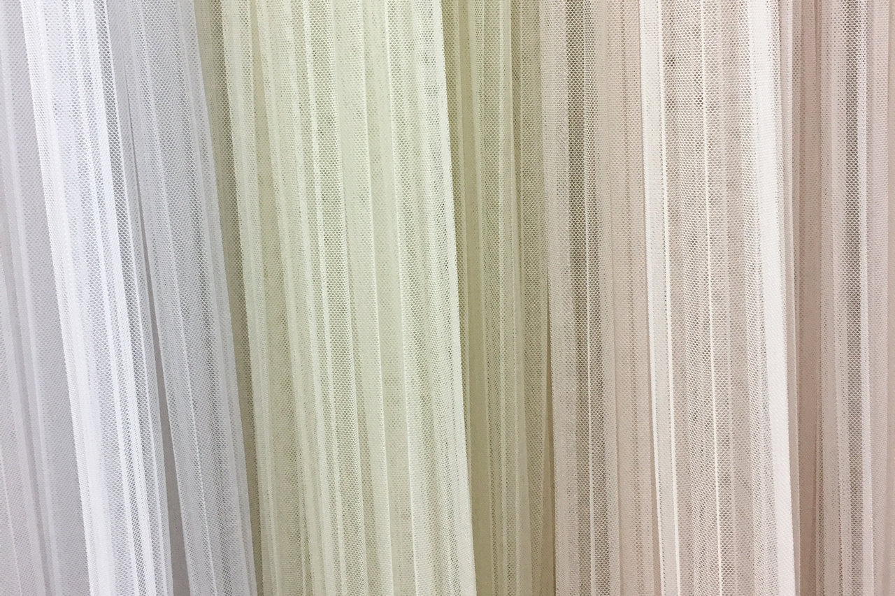
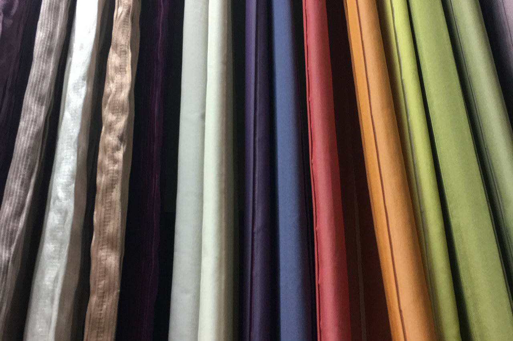
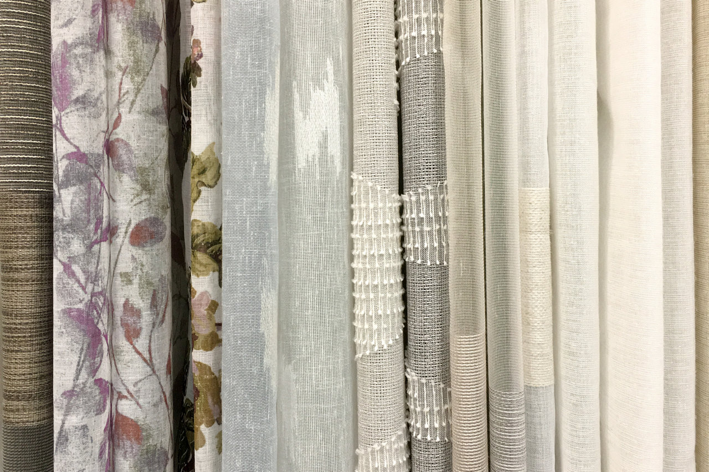
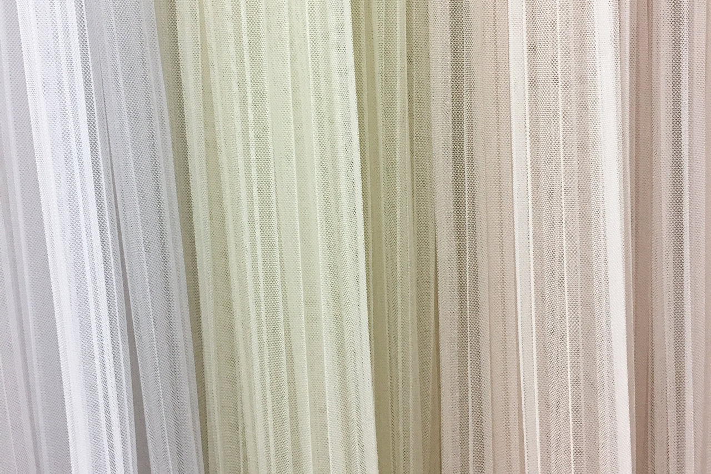
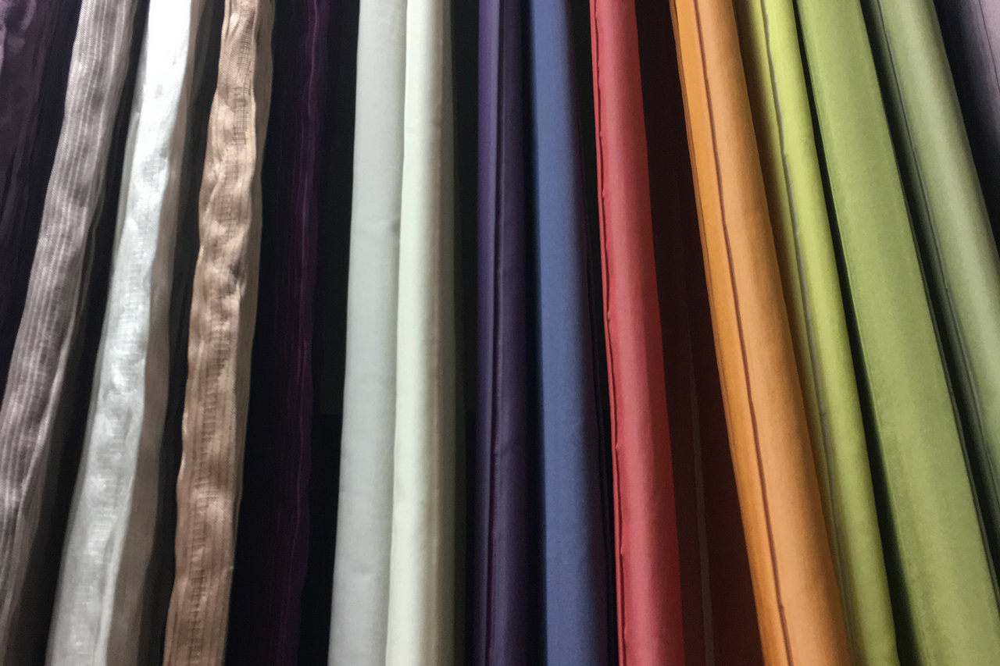
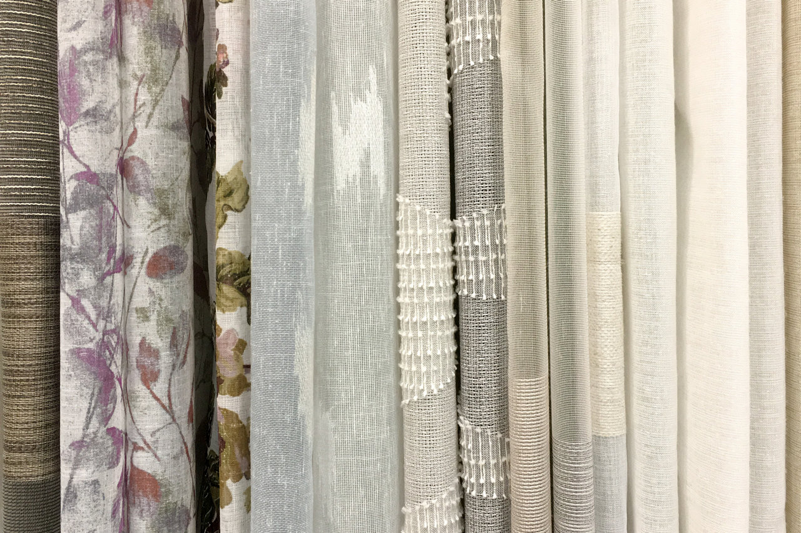

Дизайн и пошив штор в Твери
Оформляем окна в квартирах, офисах и загородных домах в Твери
- Шторы на заказ от 3 500 ₽
- Бесплатный выезд дизайнера
- Пошив штор от 3 дней
Шторы, дополняющие интерьер
Мы учтём ваши предпочтения и подберём ткань под цвет стен или мебели, чтобы шторы получились такими, как вы хотите и гармонично смотрелись в интерьере.
Для гостиной
Подберём шторы, которые создают уют и настроение. Если у вас есть домашние животные, подберём прочную ткань.
Посмотреть и пощупать ткань можно в магазине.
Для спальни
Чтобы шторы не пропускали солнечный свет, мы шьём из светонепроницаемой ткани блэкаут или на подкладке. Для комфортного отдыха советуем шить шторы в спокойных тонах.
Проверить ткань на светопропускаемость можно в магазине.
- Шторы на заказ служат дольше
- Мы выбираем качественную ткань и проверяем пошив на каждом этапе. Фабрики же экономят на ткани и оборудовании, и часто шторы получаются неточных размеров, с перекосами и пропусками.
Для кухни
Для кухни хорошо подходят модели из синтетической ткани — они легко отстирываются, не линяют и долго сохраняют вид. Посмотреть ткань можно в магазине.
Для детской
Мы рекомендуем простые в уходе ткани с натуральными волокнами. Предлагаем шторы с разными цветовыми решениями для позитивного влияния на эмоциональное здоровье ребёнка.
Для разделения помещений и дверных проёмов
Украсят помещение лёгкие, воздушные ткани: вуаль, креп и тюли с вышивкой. Разделят помещение плотные ткани: блекаут, шинил, жаккард, софт и микросатен.
- Подойдут под любую форму окна
- Перед пошивом наш дизайнер замеряет окна, поэтому шторы получаются нужного размер, даже если окно имеет нестандартную форму: арочную, асимметричную или стрельчатую.
Для загородного дома
Основное отличие штор для загородного дома — размер и форма. Мы можем сшить шторы высотой шесть метров для арочных, мансардных и наклонных окон, а также эркеров.

Для офиса
Чтобы подчеркнуть деловую обстановку и создать комфортную для работы атмосферу, шьём шторы из добротной ткани под стиль интерьера.
Приходите в студию
Подберём шторы и карнизы под ваш интерьер. Покажем ткани, проконсультируем и дадим советы.
- Шторы на заказ от 3 500 ₽
- Пошив штор от 3 дней
- Бесплатный замер
Пн-пт: 10:00–19:00
Сб-вс: 10:00–18:00
Процесс заказа
-
Приём заказа
Вы даёте нам размеры и фотографии окна в интерьере или вызываете дизайнера домой по телефону +7 482 239-50-61. Он бесплатно замерит окна и узнает о ваших предпочтениях.
-
Создание эскизов
В течение трёх рабочих дней, дизайнер готовит три эскиза с моделями штор по вашим предпочтениям. Для каждого варианта советует оптимальный карниз.
-
Выбор варианта
Вы выбираете вариант модели штор и ткани. Заключаете договор и вносите предоплату 50% от стоимости заказа.
-
Пошив штор
Дизайнер передаёт заказ в пошив и контролирует работу портных на каждом этапе. Пошив занимает от трёх рабочих дней.
-
Готовые шторы
Вы забираете шторы и получаете гарантию на один год. Можно заказать навешивание штор от 1 300 ₽ и установку карнизов от 1 500₽
Примеры работ
Гостиная
Мы сшили тюль-сетку плиссе и портьеру на люверсах. Чтобы портьера ложилась в складки, использовали ткань «Софт». Цвет штор подобрали под будущую мебель. Цвет карниза — под стены.
Кухня
Сшили шторы из льняной ткани. Чтобы разбавить однообразие кухни, подобрали ткань с красными и белыми цветами.
Спальня
Использовали тюль-кружево в силу его нежности. Дополнительно сшили покрывало-плед в тон изголовья кровати.
Отзывы
-
Отличный магазин, замечательные девушки консультанты, помогут, расскажут, всегда улыбаются :) Очень приятно приходить.
Ирина Василенко -
Замечательные современные ромбические ткани с фурнитурой и очаровательная внимательная хозяйка!!!
Инна Федотова -
Всегда хороший выбор портьерной ткани для штор. Цена-качество
Василиса Петрова -
Большое спасибо за красивые и очень качественно сшитые шторы! Все строчечки просто как по линейке проведены) Спасибо за внимательное, терпеливое и очень доброжелательное отношение!
Елена
Собственное швейное производство
Собственный швейный цех позволяет следить за качеством изделий и сократить сроки изготовления.
Помимо штор, мы шьём скатерти, декоративные подушки, покрывала, чехлы для подушек и стульев. Можем сшить нестандартные изделия.
Что у нас есть ещё
-
Готовые шторы
Мы сшили шторы специально для тех, кто не хочет ждать. Шторы не отличаются по качеству от тех, что мы делаем на заказ. Подкорректируем размер по высоте.

-
Карнизы и аксессуары
У нас есть круглые, багетные, профильные и рельсовые карнизы из дерева, металла и пластика. Бахрома, люверсы, шнуры, тесьма, стеклярус, магниты, кугели, крючки для штор, кисти и подхваты.
-
3 000 тканей
Предлагаем портьерные ткани из Турции, Италии, Испании, Бельгии, Германии и Китая. Ткани различаются стилем и цветом, качеством и ценой.
 





Приходите в студию
Адрес: Волоколамский проспект, 20, к. 1, Тверь, 170033
Телефон: +7 4822 39-50-80
Работаем:
пн-пт 10:00–19:00
сб-вс 10:00–18:00
- Шторы на заказ от 3 500 ₽
- Пошив штор от 3 дней
- Бесплатный замер